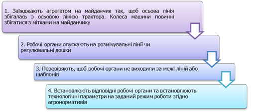
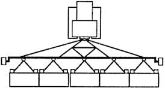
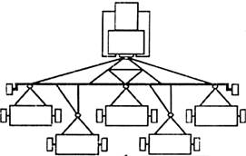

Зміст
- 1. Способи налагодження машин і агрегатів
- 2. Регулювальні майданчики та їх характеристика
- 3. Обладнання, прилади, пристосування для технологічного налагодження машин
- 4. Технологічне налагодження машин на регулювальному майданчику та в полі
- 5. Правила з’єднання і начіплювання машин
- 6. Застосування беззчіпних широкозахватних агрегатів
- 7. Використання комбінованих багатоопераційних агрегатів
- 8. Розрахування вильоту маркерів та слідопокажчика
- 9. Заходи з охорони праці під час складання та використання машинно-тракторних агрегатів
- Питання для самоконтролю
1. Способи налагодження машин і агрегатів
Визначено, що якість роботи та продуктивність агрегатів великою мірою залежить від правильності комплектування та налагоджування агрегатів.
Технологічне налагодження агрегатів, машин проводять перед початком польових робіт. Технологічне налагодження агрегатів виконують згідно операційно-технологічними картами, де вказано послідовність виконання технологічних операцій.
2. Регулювальні майданчики та їх характеристика
Регулювальний майданчик (рис. 1.7.2, 1.7.3) призначений для перевірки геометричних форм нових і відремонтованих машин після збирання, для розставляння робочих органів, налагодження на задані режими роботи плугів, лемішних лущильників, причіпних і навісних культиваторів, культиваторів-плоскорізів, зернових сівалок. Її будують на машинних дворах. Регулювальні майданчики є відкритого або закритого типу (навіси, ангари тощо).
Розміри регулювальних майданчиків вибирають залежно від природно-кліматичних та техніко-економічних умов с.-г. підприємства і напряму виробництва.
Для зони Лісостепу рекомендовано майданчик розміром 12х15 м, а для Полісся – 9х12 м або 9х14,5 м.
Покриття – тверде з нівелювальною робочою поверхнею, на яку наносять лінії розмітки. Поверхня майданчику має бути над рівнем землі не менше ніж на 100 мм. Заїзд і виїзд роблять з нахилом 0,1. Шар бетону завтовшки 200 мм (марки не нижче за М-300) вкладають на подушку з піску завтовшки 200 мм. На його поверхні наносять білою фарбою розмічальні і осьові лінії для машин (рис. 1.7.2).
Майданчик повинен мати розміри і розмітку згідно з напрямом рослинництва в господарстві.
Для перевірки схем розміщення робочих органів машин, майданчик має бути укомплектований трафаретами розміщення робочих органів машин (рис. 1.7.3, 1.7.4, 1.7.5).
1 – культиватор-плоскоріз КПШ-9; 2 – плуг ПТК-9-35, ПЛН-5-35; 3 – контрольна лінія; 4 – місце для трактора; 5 – осьова лінія; 6 – начіпний культиватор; 7 – зернова сівалка; 8 – причіпний культиватор; коренезбиральна і гичкозбиральна машини;
10 – жатка; 11 – ящик для зберігання інструменту, пристроїв та операційних карт
1 – лінія встановлення першого ряду стрільчастих і розпушувальних лап;
2 – лінія для встановлення носків лап у поперечному напрямку;
3 – лінія встановлення другого ряду розпушувальних лап;
4 – лінія встановлення другого ряду стрільчастих або третього ряду розпушувальних лап
1 – лінія осі; 2 – лінія встановлення сошника в поперечному напрямку; 3 – лінія встановлення загортача в поперечному напрямку
3. Обладнання, прилади, пристосування для технологічного налагодження машин
Регулювальні майданчики повинні мати спеціальні стелажі, ящики або шафи для зберігання пристроїв, інструментів. Майданчики обладнують краном-балкою вантажністю 3 т, набором підкладок, підставок, розмічальних дощок з мітками на кожному боці, гідравлічним домкратом або спеціальним пристроєм для піднімання машин. Підкладки використовують, як правило, дерев’яні. Вони можуть бути з одного бруса, із дошки та кількох брусів, із двох дощок та кількох брусів. Підставки металеві зварені, виготовляють їх із труб, круглого або квадратного перерізу із швелерів та кутників. Доцільно також мати металеві підставки, які регулюють за висотою. На кожній підкладці, підставці має бути вказано їх товщину, висоту.
На регулювальних майданчиках має бути комплект інструменту слюсаря-налагоджувальника, металеві лінійки завдовжки 30, 50, і 100 см, рулетки завдовжки 5, 10 і 20 м, штангенциркулі ЩЦ-1, ЩЦ-11 на 150 і 300 мм, щупи, шаблони для перевірки форм та розмірів лемешів і культиваторних лап, контрольні манометри ОБМ, МТП з верхньою межею вимірювання 0,4; 1,0; 2,5; 10,0; 16,0 МПа, шинний манометр МД-214, вакуумметри ОБВ, ОБМВ з верхньою межею вимірювання – 0,06 і 0,10 МПа, тахометри відцентрованого типу ИО-10 або годинникового типу Т4-10Р, пружинні динамометри ДПУ-0,01, ДПУ-0,02, ДПУ-0,1 і ДПУ-0,2, шнур діаметром 3…5 мм і завдовжки 10 м і мітками через 1 м та ін. Крім того, використовують комплект інструменту та пристроїв машин, які регулюють. Під час проведення налагоджувальних робіт доцільно використовувати спеціальні пристрої, обладнання, що забезпечують чіткість встановлення заданих параметрів та полегшують виконання регулювань (рис. 1.7.7).
а – пристрій для регулювання виносу мотовила і нахилу граблин; б, в – способи використання пристрою; г – кутовий і ступінчастий щупи; д, е, ж – способи використання щупів; з – шаблон способи використання шаблона
1 – підкладка; 2 – гумова прокладка; 3 – штифт
Для встановлення плугів та лемішних лущильників на задану глибину оранки має бути набір дерев’яних підкладок розмірів:
- 350×150×10 мм – 3 шт.;
- 350×150×20 мм – 2 шт.;
- 350×150×30 мм – 2 шт.;
- 350×150×50 мм – 2 шт.;
- 250×150×100 мм – 4 шт.
Довжина регулювальної дошки має дорівнювати кінематичній довжині сільськогосподарської машини, а ширина в межах 200-300 мм. Перевірку розміщення робочих органів проводять за мітками на дошці.
4. Технологічне налагодження машин на регулювальному майданчику та в полі
На майданчиках налагоджують як нові машини, так і після ремонту та зберігання.
Послідовність виконання робіт під час технологічного налагоджування техніки визначають операційними картами.

Для налагоджування машин використовують також простий стенд-майданчик для негабаритних машин (рис. 1.7.10).
Стенд-майданчик має спеціальні розсувні напрямні 4 для спрямування передніх та задніх коліс трактора, упори 3 і розмічальний щит 2. На щиті нанесено осьову лінію агрегату, осьову лінію рядків, міжряддя, проведені лінії захисних зон рядка. Трактор з начепленим культиватором заїжджає на майданчик так, щоб колеса трактора рухалися вздовж напрямних 4. При цьому осьова лінія щита має збігатися з осьовою лінією трактора. Робочі секції культиватора розміщують посередині утворених міжрядь і встановлюють робочі органи на ширину міжрядь і на задану глибину обробітку міжрядь.
1 – підставка під опорне колесо робочої секції; 2 – розмічальний щит; 3 – упор для фіксації коліс трактора; 4 – напрямні для коліс трактора; 5 – механізм начіпки трактора; 6 – культиватор; 7 – робоча секція культиватора; 8 – лапа; О – О – осьова лінія агрегату; т – т – осьова лінія рядка;
а – ширина захисної зони; в – ширина міжряддя
Розміщення робочих секцій культиватора та робочих органів доцільно проводити за виготовленою розмічальною дошкою.
Довжина дошки має дорівнювати довжині бруса рами культиватора, а ширина її становити 20…30 см. На такій дошці білою фарбою позначають осьову лінію О – О, лінії рядків та межі захисних зон рядків. Під час підготовки культиватора до роботи таку дошку кладуть на рівний майданчик біля опорних коліс робочих секцій культиватора.
Перевірку розміщення робочих секцій, робочих органів проводять за мітками на дошці.
5. Правила з’єднання і начіплювання машин
На етапі складання агрегату розміщують машини вздовж фронту зчіпки, вибирають напрямок лінії тяги причіпних знарядь або регулювання положення бруса начіпних машин у горизонтальній і вертикальній площинах та встановлюють додаткове обладнання – візир, маркери і слідопокажчики.
Для пересування агрегату у полі без перекошень і забезпечення стійкості руху потрібно так приєднати всі машини, щоб вони розміщувалися симетрично відносно його поздовжньої осі, а напрям ліній тяги збігався з напрямом руху.
Місце приєднання машин визначають на основному брусі зчіпки, починаючи від його середини (поздовжньої осі агрегату). За непарної кількості машин в ряду одну з них приєднують до середини бруса, інші – по обидва боки від неї, кожну на відстані, що дорівнює ширині захвату машини (в урахуванням стикового міжряддя) (рис. 1.7.11).
За парної кількості машин від середини бруса в обидва боки позначають відстані, що дорівнюють половині захвату машини, а далі мітки ставлять через проміжки, які відповідають захвату машини. Аналогічно роблять на брусі секції робочих органів однієї багатосекційної машини. У разі ешалонованого агрегатування у першому ряду ставлять більшу кількість машин, у другому – меншу. Цим зменшують кількість подовжувачів, за допомогою яких кріпляться машини другого ряду, що полегшує повертання агрегату.
Нечітке розміщення машин (або секцій) вздовж фронту зчіпки (або машини) спричиняє перекоси, що зумовлює різке погіршення якості роботи; можливий також вихід машини з ладу.
Великий вплив на стійкість руху агрегату має розставляння робочих органів кожної машини (для секційних машин – кожної окремої секції) на однакову глибину обробітку.
Залежно від технологічної операції, що виконується, конструктивних особливостей енергетичних засобів і машин, що агрегатуються, використовують різні способи та схеми розміщення машин відносно енергетичного засобу (рис. 1.7.13, 1.7.14).
|  |  |
| а | б |
а – шеренговий; б – ешелонний
Шеренгове розміщення машин у агрегаті можна застосовувати, якщо ходові апарати машин за шириною колії не виходять за межі ширини захвату робочих органів.
а – задня навіска; б – передня; в – фронтальна; г – бокова;
д – ешалонова; е – шеренгова; 1 – механізм навіски; 2 – навісна машина; 3 – пристосування для обробітку ґрунту від слідів коліс; 4 – зчіпка
Під час оранки агрегатом Т-150+ПЛП-6-35 чи Т-150+ПНЯ-5-35 встановлюють начіпний механізм трактора за двоточковою схемою (рис. 1.7.15) та згідно з даними табл. 1.7.1.
| Марка трактора | Колія трактора, мм | Зміщення начіпного механізму трактора, мм | Положення знижувача на плузі | Кількість корпусів, шт. | Відстань від гусениці або колеса до стінки борозни, мм |
|---|---|---|---|---|---|
| Т-150 Т-150К |
1435 1435 1435 1680 1680 |
60 60 60 150 150 |
ІІІ ІІ І ІV ІV |
6 5 4 6 5 |
240 240 240 300 300 |
А, А’, В – точки кріплення нижніх тяг;
1 – вал піднімання важелів; 2, 13 – правий і лівий важелі; 3 – верхня тяга; 4 – шарнір верхньої тяги; 5, 11 – правий і лівий розкоси; 6, 9 – права і ліва нижні тяги; 7, 10 – шарніри нижніх тяг; 8 – натяжний пристрій; 12 – нижня вісь; 14 – силовий циліндр
Під час переміщення упорів праворуч на кожну наступну лунку забезпечується зміщення головок нижніх тяг від середнього положення на 60, 113, 150 і 180 мм (рис. 1.7.16).
1 – зона встановлення лівого обмежувального упора; 2 – зона встановлення правого обмежувального упора
Тиск у шинах трактора Т-150К має бути в передніх колесах – 0,08…0,12 МПа, в задніх – 0,08…0,1 МПа.
Під час сівби цукрових буряків агрегатом Т-70С+ССТ-12В регулюють довжину розкосів та центральної тяги навіски трактора.
Довжина кожного розкосу має бути 515 мм, центральної тяги – 600…650 мм.
Для збільшення стійкості тракторів під час сівби цукрових буряків, кукурудзи, соняшнику спереду трактора (передня балка) встановлюють балансири вагою 200…270 кг.
Під час сівби кукурудзи, соняшнику в колісному тракторі встановлюють тиск в шинах: передніх – 0,17 МПа, задніх – 0,16 МПа. За міжрядного обробітку просапних культур у колісних тракторах установлюють колію – 1400 м та замінюють шини задніх коліс на вузькі.
За міжрядного обробітку цукрових буряків на трактор Т-70С встановлюють вузькі гусениці.
За міжрядного обробітку цукрових буряків агрегатом Т-70С+УСМК-5,4 чи Т-70С+УСМП-54 зміщують замок автозчіпки культиватора на 225 мм вліво від середини рами і надійно закріплюють.
Після технологічного налагодження машин на майданчику виїжджають агрегатом у поле. Тут роблять пробні проходи агрегатом і визначають якість роботи за діагоналлю проходів агрегату. При цьому заміряють головні показники якості не менше ніж у 10 місцях. Оцінюють якість робіт шляхом порівняння визначених показників з агротехнічними нормативами та їх допусками. При цьому застосовують бальну систему оцінювання показників якості робіт або комплексну систему управління якістю технологічних операцій, тобто спеціальні стандарти на показники якості виконання сільськогосподарських робіт. У разі невідповідності показників якості з нормативами додатково регулюють машини у полі.
6. Застосування беззчіпних широкозахватних агрегатів
Один із шляхів підвищення продуктивності машинно-тракторних агрегатів – вибір найбільш раціональної ширини захвату агрегату. Для підвищення продуктивності машинно-тракторних агрегатів створюють широкозахватні агрегати за допомогою зчіпок. Проте підвищення продуктивності не є кратним кількості робочих машин у зчіпці, бо отримуємо маломаневрений громіздкий агрегат. Хоч його продуктивність вища і є певний ефект в економії пального, проте ці переваги не завжди є істотними. До того ж створюються незручності під час транспортування та переведення агрегату з транспортного положення в робоче та навпаки.
Дуже ефективні беззчіпні агрегати (рис. 1.7.19) завдяки зменшенню маси (маса начіпного пристрою не перевищує 120 кг), зниженню тягового опору і довжини виїзду.
1 – брус зчіпного пристрою; 2 – подовжувач сниці; 3 – розкоси; 4 – трос; 5 – розширений обід
Для зменшення цих самих проблем також застосовують широкозахватні багатосекційні сільськогосподарські машини (рис. 1.7.20, 1.7.21).
Велика ширина агрегату «MEGADISK» дає можливість обробляти поля до 400 га за одну добу. Особливості конструкції дають можливість швидко транспортувати техніку на нові об’єкти або господарства після виконання робіт. Пневматичні транспортні колеса роблять агрегат не тільки мобільним, але й маневреним. Гідросистема дозволяє швидко переводити «MEGADISK» з робочого положення в транспортне і навпаки.
Широкозахватні сільськогосподарські машини випускає і вітчизняна промисловість (рис. 1.7.22 і 1.7.23).
7. Використання комбінованих багатоопераційних агрегатів
Освоєння і впровадження новітніх енергозберігальних технологій вирішується, переважно, завдяки багатоопераційним машинно-тракторним агрегатам. Основний показник формування багатоопераційних МТА – якість роботи; проте не слід забувати і про їхні продуктивність і економічність.
Мінімізації та енергозбереження можна досягти за зменшення глибини обробітку та залучення комбінованих агрегатів, що виконують за один прохід кілька операцій (рис. 1.7.24, 1.7.25).
При цьому зменшується шкідливий вплив ваги агрегату на ґрунт внаслідок зменшення кількості проходів (рис. 1.7.26). Зберігається енергія та вивільняються машини. Так, суміщення операцій сівби та обробітку ґрунту зменшує витрати праці на 20…25 %, а витрати палива – на 15…20 %. Зменшуються витрати вологи через скорочення розриву в часі між обробітком ґрунту та сівбою з 2…3 години (іноді – 1…3 доби) у разі одноопераційних агрегатів до 1…3 секунд у разі застосування комбінованих ґрунтообробно-посівних агрегатів. Це також поліпшує проростання, ріст та підвищує урожайність на 10 %.
Використання комбінованих багатоопераційних ґрунтообробних машин і посівних агрегатів дають змогу зберегти структуру ґрунту, запобігти ерозії завдяки збереженню на поверхні ґрунту рослинних решток, скоротити строки сівби, зберегти вологість ґрунту, зменшити потребу сільськогосподарських підприємств у тракторах.
8. Розрахування вильоту маркерів та слідопокажчика
Важливим моментом під час комплектування посівних агрегатів є розрахування вильоту маркера.
Виліт маркера – це відстань від осьової лінії крайнього робочого органу агрегату до диска маркера, що утворює слід.
Залежно від способу руху агрегати обладнують одним лівим або двома – правим і лівим маркерами.
За човникового руху агрегати обладнують двома маркерами (правим і лівим).
Під час руху агрегату всклад необхідно мати один правий маркер.
Способи водіння агрегату вздовж маркерної лінії:
- водіння агрегату за візиром;
- водіння агрегату посередині правих напрямних коліс або гусениці;
- водіння трактора почергово то лівою, то правою частиною ходового апарата;
- водіння агрегату вздовж поздовжній осі симетрії трактора (на пробці радіатора);
- водіння агрегату зовнішніми краями напрямних коліс або гусениці трактора.
Водіння агрегату вздовж візирної лінії (візиру), як правило, використовують за першого проходу агрегату, коли лінію першого проходу позначають віхами.
Механізатор фіксує своє положення в кабіні трактора, візуально з’єднує орієнтир з умовною вертикаллю на лобовому склі та візиром на капоті двигуна трактора і виконує перший прохід агрегату за віхами, в наступних проходах агрегату, з’єднує візир з осьовою лінією маркера.
Під час водіння агрегату вздовж візира, встановленого в напрямку поздовжньої осі трактора, вильоти правого і лівого маркерів будуть однаковими (рис. 1.7.27):
$$ l_{пр} = l_{лів} = \frac{B+m}{2},\: м. $$
Під час водіння агрегату зовнішніми обрізами напрямного колеса або гусениці тракторів виліт правого маркера визначають:
$$ l_{пр} = \frac{B-A}{2} + m,\: м, $$
де \(B\) – відстань між крайніми робочими органами, м;
\(А\) – відстань між зовнішніми обрізами гусениць або напрямних коліс, м;
\(m\) – ширина стикового міжряддя, м.
При цьому виліт лівого маркера:
$$ l_{лів} = \frac{B+A}{2} + m,\: м. $$
У разі водіння агрегату почергово то лівою, то правою частиною ходового апарату, вильоти лівого і правого маркерів будуть однакові:
$$ l_{пр} = l_{лів} = \frac{B-A}{2} + m,\: м. $$
На рис. 1.7.28 зображено встановлення вильоту слідопокажчика від осі симетрії трактора:
$$ l_{м}^0={В_{р} \cdot l_{сл.п.}}, $$
де \(l_{м}\) – виліт слідопокажчика, м;
\(В_{р}\) – робоча ширина захвату, м;
\(l_{сл.п.}\) – виліт плеча штанги слідопокажчика від повздовжньої осі симетрії трактора, м.
9. Заходи з охорони праці під час складання та використання машинно-тракторних агрегатів
Механізатори, слюсарі-налагоджувальники перед виконанням операцій на регулювальних майданчиках мають пройти інструктаж з техніки безпеки. Інструктаж проводить відповідальний за охорону праці в господарстві. Після проведення інструктажу необхідно зробити відповідний запис у журналі з техніки безпеки.
Технологічне налагодження машин проводити на спеціальних регулювальних майданчиках або на спеціально відведених місцях. Майданчики мають бути обладнані справним інструментом, приладами тощо. Ключі мають відповідати розмірам гайок. Не дозволяється ставити прокладку між зівом ключа і боковою гранню гайки або подовжувати один ключ іншим. Для відгвинчування гайок забороняється використовувати зубило і молоток. Під час складання вузлів, механізмів використовувати справні пристрої, обладнання (спеціальні знімачі, преси та ін.). Використовуючи знімачі, перевірити, щоб гвинт розміщувався у центрі деталі, а лапки надійно охоплювали деталь.
Для встановлення стиснутих пружин використовувати спеціальні пристрої (для запобігання їх раптової дії).
Для перевірки збігання отворів деталей треба використовувати спеціальні оправки і ломики.
Піднімати машини тільки домкратом або спеціальним підіймачем. Під раму машини підставляти надійні підставки (опори) певної висоти (рама має розміщуватися горизонтально).
Забороняється перебувати стороннім особам в зоні дії підіймальних механізмів.
На регулювальному майданчику обов’язково має бути аптечка.
Для перевірки технічного стану машини звертати увагу на наявність і надійність кріплення захисних засобів над карданними, ланцюговими, пасовими та іншими передачами. Перевіряти наявність і стан інструменту, що додається до машини.
Під час проведення налагодження машин звернути увагу на наявність і справність двобічної сигналізації, системи освітлення.
Перш ніж запустити двигун трактора, комбайна, машини, перевірити, щоб важіль перемикання передач знаходився у нейтральному положенні.
Під’їжджати трактором до машини потрібно на малій частоті обертання двигуна, рухатися без ривків і не знімати ногу з педалі зчеплення. Причіпну сергу трактора з’єднувати з причіпним пристроєм машини лише за вимкненої передачі трактора і непрацюючого двигуна. Уважно стежити за діями працівника, який приєднує, зчіплює або начіплює машину.
При русі з місця оглянутись і впевнитись, що працівники знаходяться на безпечній відстані від агрегату, подати сигнал.
Питання для самоконтролю
- Що означає поняття технологічне налагодження агрегатів?
- Назвіть основні операції налагодження машин та агрегатів.
- Дайте характеристику обладнання для технологічного налагодження машин.
- Поясніть порядок технологічного налагодження машин на регулювальному майданчику.
- Поясніть суть технологічного налагодження машин у полі.
- Поясніть правила розміщення машин уздовж фронту зчіпки.
- Як налагодити начіпний пристрій тракторів Т-150 і Т-150К на оранці?
- Назвіть переваги беззчіпних агрегатів.
- Назвіть переваги комбінованих багатоопераційних агрегатів.
- Як визначити виліт маркера і слідопокажчика?